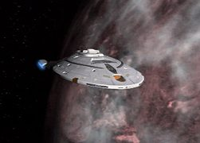
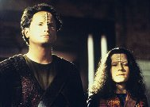

|
MANCHETE
DO EPISÓDIO
Acusados de terrorismo, Paris e Kim
testam os limites do corpo e da mente
Episódio
anterior | Próximo
episódio
Sinopse:
Data Estelar: 50156.4
Durante uma licença em Akritiri, Paris e Kim são acusados de
terrorismo a bomba. Paris já está em uma prisão infernal quando
Kim chega por meio de um tubo metálico. Como se o confinamento no
lugar brutal não fosse suficiente, Tom mostra ao amigo um implante
colocado em todos os prisioneiros, o qual parece afetar o sistema
nervoso e aparentemente não pode ser removido.
 Na
Voyager, Janeway é informada por Liria, o embaixador Akritiriano,
que os oficiais foram presos por uma explosão que matou 47 pessoas.
A evidência são traços de trilítio encontrados nas roupas deles.
Embora o material possa ser obtido através do dilítio que a
Voyager usa para energizar suas máquinas, Janeway nega avidamente
que seu pessoal esteja envolvido no atentado. A nave sai da região,
mas a capitã se determina a encontrar os verdadeiros terroristas.
Na prisão, Paris e Kim planejam um
modo de sair pelo tubo, que é protegido por um campo de força
mortal. Mas antes que possam fazer qualquer coisa, Paris é
esfaqueado por um dos prisioneiros. Sem atendimento médico, Kim faz
um trato com outro preso, Zio; diz que o levará junto com ele
quando desativar o campo em troca de suprimentos para limpar a
ferida do amigo.
Kim e Zio sobem pelo tubo e encontram
uma abertura que é na verdade uma escotilha levando ao espaço; o
que pensavam ser uma prisão subterrânea é de fato um grande satélite
isolado. Com Paris se aproximando da morte, Kim tenta convencer
alguns prisioneiros a ajudá-lo a sair, mas a idéia parece tão
improvável que eles o surram. Mais tarde, quando Paris, delirante,
destrói o aparelho que Kim tinha usado para desativar o campo, Kim
quase mata o colega. Ele se recompõe antes de fazer uma besteira.
 Janeway
localiza e captura os verdadeiros criminosos, um jovem e sua irmã,
mas Janeway se surpreende quando Liria se recusa a trocá-los por
seus tripulantes; as sentenças nunca são reversíveis. A capitã
então se prepara para lidar com os terroristas. Em troca da
liberdade, eles levam Tuvok e Janeway para a prisão, onde resgatam
os colegas e os trazem de volta para a Voyager.
Comentários:
"The Chute" dá uma amostra do quanto o
terceiro ano de Voyager será diferente dos anteriores.
Talvez a história nem mesmo se enquadre no gênero tradicional de Jornada.
Isso é uma crítica boa à série, que raramente retratou bem a
questão da psicologia humana.
 Em
termos de construção dos personagens, o episódio aprofundou
bastante o relacionamento entre Tom e Harry, que parece ter sido
mais explorado do que o namoro entre Neelix e Kes, ou mesmo a relação
entre Janeway e Chakotay. Tem sido meta da equipe de roteiristas,
desde o início, trabalhar o elo entre esses dois personagens e, em "The
Chute", foram bem-sucedidos. Em
termos de construção dos personagens, o episódio aprofundou
bastante o relacionamento entre Tom e Harry, que parece ter sido
mais explorado do que o namoro entre Neelix e Kes, ou mesmo a relação
entre Janeway e Chakotay. Tem sido meta da equipe de roteiristas,
desde o início, trabalhar o elo entre esses dois personagens e, em "The
Chute", foram bem-sucedidos.
O ponto alto da história, foi, é
claro, o conflito entre Paris e Kim. Não poderia ter sido de outra
forma. As atuações de Robert McNeill e Garret Wang
convenceram não apenas pela dramaticidade como pela carga emotiva
que despertou nos fãs. O episódio mexe com o telespectador. Em
termos de Voyager, é uma quebra no padrão que vinha sendo
usado, de que apenas as histórias recheadas de efeitos visuais eram
valorizadas.
 Mas
é claro que essa parte também não pode ser ignorada. O fã tem em
"The Chute" uma pincelada do que serão os efeitos
daqui para frente. É só ver a nave-prisão em que Tom e Harry eram
mantidos, ou a batalha entre a Voyager e os caças Akritirianos. A série
incorpora de vez o CGI e abandona o uso das maquetes. A agilidade
nas seqüências será bem maior. E os roteiristas se aproveitarão
disso. Mas
é claro que essa parte também não pode ser ignorada. O fã tem em
"The Chute" uma pincelada do que serão os efeitos
daqui para frente. É só ver a nave-prisão em que Tom e Harry eram
mantidos, ou a batalha entre a Voyager e os caças Akritirianos. A série
incorpora de vez o CGI e abandona o uso das maquetes. A agilidade
nas seqüências será bem maior. E os roteiristas se aproveitarão
disso.
Interessante também foi o papel que
Zio desempenhou na história. Ele é um sábio, com conhecimentos e
uma atitude que fogem aos demais. Ele é alguém sob controle, não
sofre os efeitos do implante. Zio oferece sua sabedoria para Harry.
Mas a que preço o alferes aceita? Kim escolhe lutar contra o
implante a ter que matar seu melhor amigo.
O episódio peca apenas no final. A
trama vem sendo desenvolvida com precisão, mas é interrompida por
uma resolução rápida. A capitã chega na pequena nave de Neelix,
com uma equipe de seguranças e sem obstáculo algum e resgata seus
oficiais. Onde estava a guarda Akritiriana? Como eles chegaram até
lá no velho cargueiro do Talaxiano sem serem detectados?
Citações:
Zio - "He eats your food,
he ruined your device. He's given in to the clamp. You've got to get
rid of him before he brings you down with him."
("Ele come a sua comida, estragou a sua ferramenta. Ele está
cedendo ao implante. Você tem que se livrar dele antes que te leve
com ele.")
Paris - "You want to know
what I remember? I remember someone saying, 'This man is my friend.
No one touches him.' I'll remember that for a long time."
("Quer saber o que eu lembro? Eu me lembro de alguém
dizendo, 'Esse homem é meu amigo. Ninguém toca nele.' Vou me
lembrar disso por um bom tempo".)
Trivia:
 Antes de ter seu nome final definido, os produtores trabalharam com
duas outras possibilidades: "Playground" e "The Pit".
Antes de ter seu nome final definido, os produtores trabalharam com
duas outras possibilidades: "Playground" e "The Pit".
Este foi o primeiro episódio filmado na terceira temporada da série.
"Sacred Ground", "False Profits", "Flashback"
e "Basics, Part II" foram
todos filmados durante o segundo ano, mas só exibidos junto com a
terceira temporada.
"Esse é um episódio duro na queda com grande quantidade de ação",
disse Jeri Taylor. "Mas, no fundo, espero que seja uma história
de amigos, uma união entre duas pessoas, e uma iniciação de uma
delas sob a mais dura das circunstâncias. Acredito que, sob a
crueldade, há uma mensagem do poder do amor."
Ficha
técnica:
História de Kenneth Biller
Roteiro de Clayvon C. Harris
Direção de Les Landau
Exibido em 18/09/1996
Produção: 047
Elenco:
Kate Mulgrew como
Kathryn Janeway
Robert Beltran como Chakotay
Roxann Biggs-Dawson como B'Elanna Torres
Robert Duncan McNeill como Tom Paris
Jennifer Lien como Kes
Ethan Phillips como Neelix
Robert Picardo como Doutor
Tim Russ como Tuvok
Garrett Wang como Harry Kim
Elenco convidado:
Don R. McManus como Zio
Robert Pine como Liria
James Parks como Vel
Ed Trotta como Pit
Beans Morocco como Rib
Rosemary Morgan como Piri
Episódio
anterior | Próximo
episódio
|